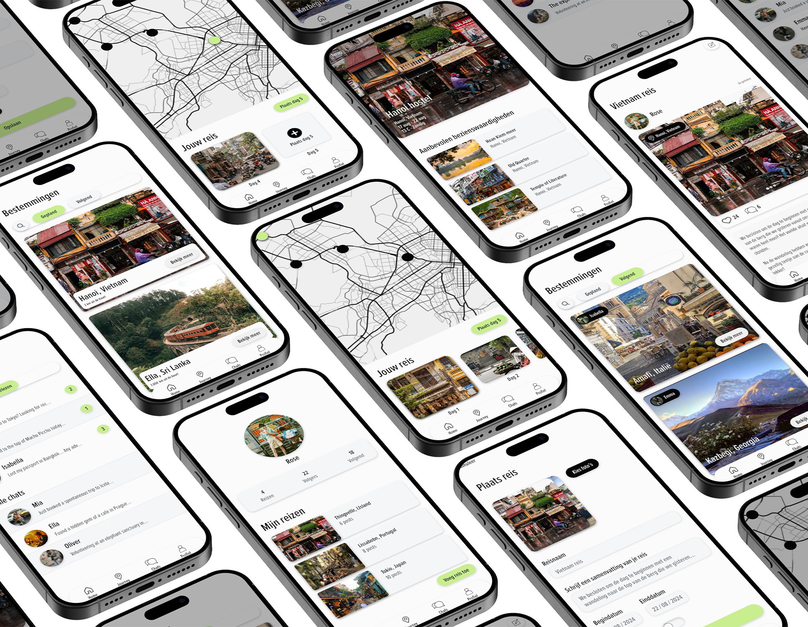
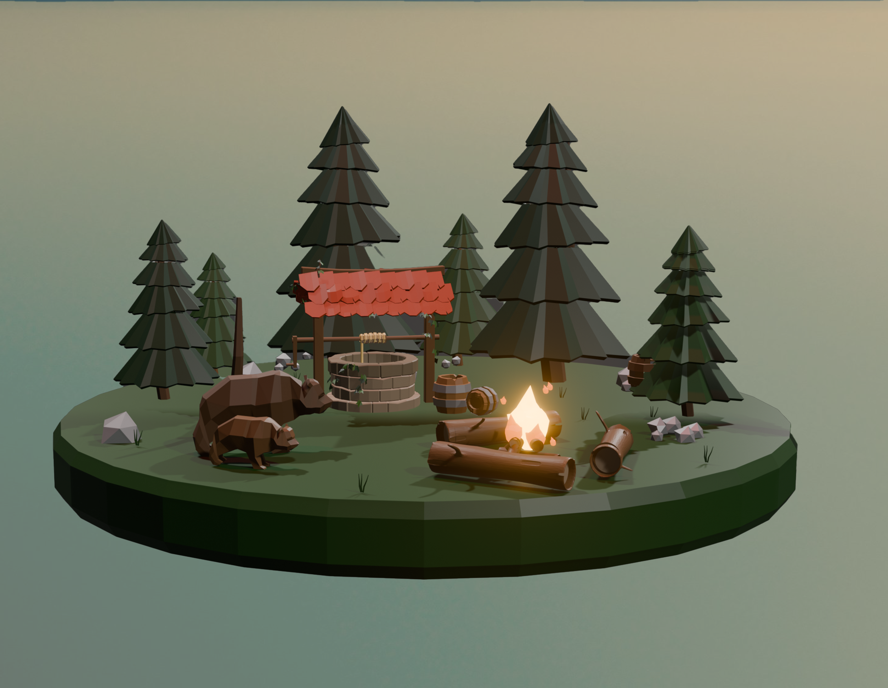

-
Paradiso
In dit project heb ik de paradiso site from scratch nagemaakt. In een overzicht laat ik zien wat ik heb geleerd.

-
Travel Journey
In dit project heb ik een concept (UX design) uitgewerkt tot app met hi–fi schermen (UI design). In een overzicht laat ik zien wat ik heb geleerd.
 -
Blender
In dit project heb ik meerdere 3D designs gemaakt. In een overzicht laat ik zien wat ik heb geleerd.
